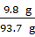
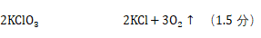
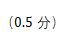

《知识与能力训练•化学•九年级》
参考答案
（2021）
第一单元 走进化学世界
第1课时 课题1 物质的变化和性质
【课堂练习】
1. C 2. C 3. A 4. B 5. C 6. B 7. D 8. A
【课后练习】
9. A C B D 10. D 11. BC；AD
第2课时 课题2 化学是一门以实验为基础的科学（1）
【课堂练习】
1. B 2. C 3. D 4. D 5. B
6.（1）④①②⑥⑤③
（2）
|
探究步骤 |
对实验的观察和描述 |
实验结论 |
|
点燃前 |
石蜡块放入水中观察到的现象： 浮在水面 用指甲在蜡烛表面划过，会 划出痕迹 |
石蜡的密度比水 小 石蜡的硬度 较小 |
|
燃着时 |
①点燃蜡烛，把一根火柴梗放在蜡烛的火焰中，如图所示，约1s后取出可以看到火柴梗的 a （选填图中字母）处最先炭化，说明此处温度 最高 ②干冷的烧杯内壁出现 水雾 现象，澄清石灰水 变浑浊 |
a.蜡烛火焰的 外焰 温度最高 b.蜡烛燃烧后的生成物中一定含有 水 、 二氧化碳 |
|
熄灭后 |
吹灭蜡烛，观察到一缕白烟 |
白烟是石蜡蒸气遇冷凝结而成的白色固体小颗粒 |
【课后练习】
7.（1）小强 （2）水蒸气 （3）小明；水蒸气和二氧化碳；水蒸气和二氧化碳都不能燃烧 （4）物理
第3课时 课题2 化学是一门以实验为基础的科学（2）
【课堂练习】
1. C 2. D 3. C 4. B 5. B
【课后练习】
6. B
7. 吹气；吸气；甲
第4课时 课题3 走进化学实验室（1）
【课堂练习】
1. D
2. A：铁架台 B：酒精灯 C：量筒 D：胶头滴管 E：烧杯 F：集气瓶 G：滴瓶
3.（1）量筒 胶头滴管 （2）集气瓶 （3）铁架台 （4）药匙 （5）胶头滴管
（6）试管 （7）玻璃棒 （8）试管夹 （9）烧杯 玻璃棒 （10）集气瓶
【课后练习】
4. B 5. C 6. A 7. C 8. D 9. ④⑤； ③； ①②
第5课时 课题3 走进化学实验室（2）
【课堂练习】
1.①d； ②c g； ③a f； ④b； ⑤e； ⑥f 2.B 3.B 4.C 5.C
【课后练习】
6. D 7. D 8. C 9. C 10. D 11. B 12. D 13. D
第6课时 课题3 走进化学实验室（3）
【课堂练习】
1. A 2. C 3. A 4. B 5. B 6. A 7. C
【课后练习】
8. C 9. A 10. B 11. D 12. B
第二单元 我们周围的空气
第7课时 课题1 空气（1）
【课堂练习】
1.C 2.A
3.（1）产生大量白烟，放热； 红磷+氧气五氧化二磷
（2）集气瓶；1/5
（3）氮气； 无色，难溶于水； 不能燃烧也不支持燃烧
4. C
【课后练习】
5. B 6. A 7. C
8.（1）21%； 氮气； 0.03% （2）空气的主要成分是氮气和氧气（或空气属于混合物）
（3）氧气； 二氧化碳； 水蒸气
9.（1）ABC （2）ABC
第8课时 课题1 空气（2）
【课堂练习】
1.（1）④ （2）② （3）③ （4）① （5）④
2. A 3. D 4. B
【课后练习】
5. C 6. B 7. C 8. D 9. D 10. D 11. A 12. D
第9课时 课题2 氧气
【课堂练习】
1. D 2. D 3. A 4. C 5. D 6. B 7. D 8. D
【课后练习】
9. D 10. D 11. C
12.（1）剧烈燃烧，火星四射，放热，生成黑色固体； 铁+氧气四氧化三铁； 化合反应
（2）发出淡蓝色的火焰，放热，生成带有刺激性气味的气体； 硫+氧气二氧化硫；化合反应
（3）产生大量白烟，放热； 红磷+氧气五氧化二磷； 化合反应
（4）剧烈燃烧，发出白光，放热，生成能使澄清的石灰水变浑浊的气体； 碳+氧气二氧化碳； 化合反应
第10课时 课题3 制取氧气（1）
【课堂练习】
1.C 2.D 3.C 4.C 5.D 6.A 7.B 8.C
【课后练习】
9.（1）①试管口未向下倾斜；②导管伸入试管太长；③试管口没有放一团棉花
（2）a. 酒精灯；b. 试管；c. 集气瓶；d. 水槽
（3）③④①②⑤⑥
（4）先停止加热了，水倒流入试管，引起炸裂
（5）向上排空气；将带火星的木条放在瓶口
（6）白；澄清石灰水变浑浊
10.（1）试管
（2）防止冷凝水倒流，试管炸裂
（3）高锰酸钾 锰酸钾+二氧化锰+氧气；没有在试管口放置一团棉花
锰酸钾+二氧化锰+氧气；没有在试管口放置一团棉花
（4）BD
第11课时 课题3 制取氧气（2）
【课堂练习】
1.B 2.C 3.B 4.D 5.A
6.（1）AC或AD；试管口没有放一团棉花
（2）连续均匀冒出；水倒流回试管，使试管炸裂
（3）将带火星的木条放在瓶口，若木条复燃，则氧气已收集满
（4）连接好装置，把导管插入水中，用手紧握试管外壁，若水中导管口有气泡冒出，则装置气密性良好
【课后练习】
7.B 8.C 9.B 10.C 11.C 12.C
13.（1）①过氧化氢水+氧气 ②氯酸钾 氯化钾+氧气
③B ④A ⑤Ｃ或Ｅ （2）①②③ （3）AE
14.（1）铁架台； 酒精灯
（2）ABDEG； 高锰酸钾 锰酸钾+二氧化锰+氧气
锰酸钾+二氧化锰+氧气
（3）ABCF； 催化作用
（4）ABC
第三单元 物质构成的奥秘
第12课时 课题1 分子和原子（1）
【课堂练习】
1. A 2. C 3. D 4. D 5. B 6. B 7. C
【课后练习】
8. A 9. C 10. A
11.（1）分子处于不断运动之中 （2）不污染环境 （3）氨分子运动比氯化氢分子运动快（或氨分子质量较小，运动速度更快）
第13课时 课题1 分子和原子（2）
【课堂练习】
1. A 2. D 3. D 4. C 5. D 6. C 7. C 8. C ABD 9. D
10. 1；2；3；1
11. B 12. D
【课后练习】
13. A 14. D 15. C
16.（1）A； BC （2）化学变化； 物理变化
17.（1）原子；分子 （2）分解 （3）在化学变化中，分子可以再分，原子不能再分；分子分为原子，原子重新组合形成新的分子
第14课时 课题2 原子的结构（1）
【课堂练习】
1. A 2. D 3. D 4. A 5. C 6. D 7. D 8. C 9. A
【课后练习】
10. A 11. B 12.（1）16；7；碳原子、硅原子 （2）10；氖
第15课时 课题2 原子的结构（2）
【课堂练习】
1. C 2. B 3. ②⑤⑥； ①④； ③； ①③④
4.（1）Ca2+ （2）S2- （3）Na+ （4）Cl-
5. C 6. A 7. C
【课后练习】
8. D 9. B 10. C 11. B 12. D 13. C 14. C
15. 失去； 正； 得到； 负； Na+ 和Cl-
第16课时 课题2 原子的结构（3）
【课堂练习】
1. D 2.C 3. B 4.C 5.D 6.D 7.B
【课后练习】
8.D 9.D 10.D 11.A
第17课时 课题3 元素（1）
【课堂练习】
1. a.Al b.Ca c.Zn d.Na e.Fe f.Si g.He h.O i.H
（1）a b c d e （2）h i （3）a；h
2.（1）P （2）Mg （3）4S （4）Cu （5）nNe （6）2个氯原子
3.（1）氢元素或一个氢原子 （2）2个氢原子 （3）5个银原子
（4）氖元素或一个氖原子或氖气
4. B 5. D 6. C 7. C 8. A
【课后练习】
9. D 10.C 11.C
12.（1）原子 （2）二氧化碳； 铜； 氯化钠 （3）3；9 （4）3； ①③④； ②
（5）A
13.（1）原子：汞原子；分子：水分子 （2）①7 ②最外层电子数 ③核电荷数（或质子数）
第18课时 课题3 元素（2）
【课堂练习】
1.B 2.B 3.D 4.B 5.C 6.C 7.D
8.（1）19.00； 得； 阴离子 （2）金属； Ca2+ （3）8 （4）BC （5）B
9. ①22.99； ②11； ③1； ④失去； ⑤Na+
【课后练习】
10.C 11.C 12.D 13.A
14.（1）3 （2）Na （3）Na+ （4）O2- （5）O；二；8；得到；核电荷数（或质子数）不同
15.（1）非金属；78.96 （2）三；失去 （3）2，原子重新组合成新的分子
第四单元 自然界的水
第19课时 课题1 爱护水资源
【课堂练习】
1. D 2. D 3. B 4. B 5. A
【课后练习】
6. D 7. B 8. B 9. D
第20课时 课题2 水的净化
【课堂练习】
1. C 2. C 3. B 4. B 5.B 6.C 7.D
【课后练习】
8.A 9.D 10.D
11.（1）玻璃棒；引流；防止过滤液体飞溅出来，加快过滤速度
（2）滤纸没有紧贴漏斗内壁，滤纸和漏斗内壁之间有气泡
（3）①滤纸破损；②过滤时液体液面高于滤纸边缘；③玻璃仪器不干净
（4）不同意；还含有可溶性杂质；蒸馏；物理变化
（5）肥皂水；浮渣少，泡沫多
第21课时 课题3 水的组成（1）
【课堂练习】
1. A 2. D 3. C 4. D 5. D 6. D 7. C
【课后练习】
8. 气泡； 使带火星的木条复燃； 燃烧； 氧气； 氢气； 氢元素和氧元素； 化学；③
9.（1）A：水； B：氧气； C：氢气； D：铁； E：四氧化三铁；
（2） 水氧气+氢气； 铁+氧气四氧化三铁
10.（1）负； 正
（2）木条燃烧更旺； 助燃 （3）2∶1
第22课时 课题3 水的组成（2）
【课堂练习】
1. B 2. B 3. B 4. C 5. A 6. A
【课后练习】
7. A 8. B
9.（1）B； CD； B （2）①③⑥⑧； ②④⑤⑦⑨⑩； ⑤⑦⑨⑩； ②④
10.B 11.B 12. ① ⑤
第23课时 课题4 化学式与化合价（1）
【课堂练习】
1.C；ACD 2.B 3.D
4. （1）O2 ：氧气； 一个氧分子； 氧气由氧元素组成； 一个氧分子由两个氧原子构成
2O2 ：两个氧分子
Fe：铁元素； 单质铁； 一个铁原子
（2）2Al：两个铝原子
2Cl2：两个氯分子； 一个氯分子由两个氯原子构成
2O2-：两个氧离子； 一个氧离子带两个单位的负电荷
5.A 6.C 7.B
【课后练习】
8.（1）Al3+ （2）2H2O2 （3）3Cl- （4）
9.
|
锌 |
铁 |
铜 |
氦气 |
氖气 |
氩气 |
|
Zn |
Fe |
Cu |
He |
Ne |
Ar |
|
硫 |
磷 |
氢气 |
氧气 |
氮气 |
氯气 |
|
S |
P |
H2 |
O2 |
N2 |
Cl2 |
|
氧化镁 |
氧化汞 |
水 |
二氧化碳 |
二氧化锰 |
|
MgO |
HgO |
H2O |
CO2 |
MnO2 |
|
二氧化硫 |
四氧化三铁 |
五氧化二磷 |
氯化氢 |
氯化钠 |
|
SO2 |
Fe3O4 |
P2O5 |
HCl |
NaCl |
10.
|
Al |
Mg |
Ba |
Ag |
H2S |
SO3 |
NO2 |
CaCl2 |
|
铝 |
镁 |
钡 |
银 |
硫化氢 |
三氧化硫 |
二氧化氮 |
氯化钙 |
第24课时 课题4 化学式与化合价（2）
【课堂练习】
1. NaCl KCl AgCl HCl H2O MgCl2 CaCl2
BaCl2 ZnCl2 AlCl3 SiO2 P2O5 N2O5 FeO
Fe2O3 CO CO2 H2S S SO2 SO3
2.
|
|
Ca(OH)2 |
Na2CO3 |
NH4Cl |
AgNO3 |
CuSO4 |
|
原子团名称 |
氢氧根 |
碳酸根 |
铵根 |
硝酸根 |
硫酸根 |
|
原子团的化合价 |
-1 |
-2 |
+1 |
-1 |
-2 |
3.A 4.D 5.D 6.D 7.C
8.
|
化学式 |
Fe2O3 |
SO3 |
KOH |
Fe(OH)2 |
MgCl2 |
AlCl3 |
|
名称 |
氧化铁或 三氧化二铁 |
三氧化硫 |
氢氧化钾 |
氢氧化亚铁 |
氯化镁 |
氯化铝 |
|
化学式 |
BaCO3 |
Na2SO4 |
KCl |
KClO3 |
KMnO4 |
K2MnO4 |
|
名称 |
碳酸钡 |
硫酸钠 |
氯化钾 |
氯酸钾 |
高锰酸钾 |
锰酸钾 |
9.
|
物质名称 |
氧化钙 |
氯化钙 |
氯化铁 |
氢氧化钠 |
氢氧化镁 |
|
化学式 |
CaO |
CaCl2 |
FeCl3 |
NaOH |
Mg(OH)2 |
|
物质名称 |
氢氧化铝 |
硫酸钡 |
硫酸亚铁 |
硫酸铜 |
硝酸钾 |
|
化学式 |
Al(OH)3 |
BaSO4 |
FeSO4 |
CuSO4 |
KNO3 |
|
物质名称 |
硝酸银 |
碳酸钠 |
碳酸钙 |
硝酸铵 |
硫酸铵 |
|
化学式 |
AgNO3 |
Na2CO3 |
CaCO3 |
NH4NO3 |
（NH4）2SO4 |
【课后练习】
10. D 11. C 12. A
13.（1）①4SO42- ② CO32- ③ NH4+ ④OH- ⑤NO3- ⑥FeO
（2）① 一个钙离子带两个单位正电荷
②硫酸亚铁中铁元素的化合价为+2价
第25课时 课题4 化学式与化合价（3）
【课堂练习】
1.（1）64 （2）122.5 （3）74 （4）132
2. A 3. D 4. 46.7% 5. D 6. C
7.（1）3 （2）43 （3）1∶8
【课后练习】
8.（1）-3 （2）79 （3）1∶5∶3∶1
（4）14∶5∶48∶12 （5）×100%＝17.7%
（6）由第（5）问知纯的碳酸氢铵中N元素的含量为17.7%，因为该化肥不是纯的碳酸氢铵，化肥中N元素质量分数＜17.7%＜24%，所以是虚假广告。
第五单元 化学方程式
第26课时 课题1 质量守恒定律(1)
【课堂练习】
1. C 2. A 3. C 4. D 5. D
6.（1）①白磷燃烧，产生大量白烟； ②先膨胀后缩小； ③先向右偏，最终平衡
（2）偏右； 符合； 气球受到浮力作用 （3）气体
【课后练习】
7. B 8. C 9. D 10. C 11. B 12. D 13. D
第27课时 课题1 质量守恒定律(2)
【课堂练习】
1. D 2. C 3. D 4. D 5. A 6. B
【课后练习】
7. C 8. C 9. C 10. C
11.（1）CO （2）2∶1（或1∶2）；化合反应 （3）①③⑤⑥
第28课时 课题2 如何正确书写化学方程式（1）
【课堂练习】
1. C 2.（1）②⑥ （2）④ （3）③⑤ （4）①
3.（1）C + O2CO2
（2）S + O2SO2
（3）3Fe + 2O2Fe3O4
（4）4P + 5O22P2O5
（5）2H2O=2H2↑ + O2↑
（6）2H2O2=2H2O + O2↑
（7）2KMnO4K2MnO4 + MnO2 + O2↑
（8）2KClO3=2KCl + 3O2↑
4. B 5. B 6. B
【课后练习】
7.（1）客观事实 （2）质量守恒定律
8.（1）指出错误：不符合客观事实，生成物写错；改正：3Fe + 2O2Fe3O4
（2）指出错误：不符合客观事实，反应物和生成物写反；改正：4P + 5O22P2O5
（3）指出错误：不符合客观事实，生成物写错；改正：2H2O2 2H2O + O2 ↑
9. B 10. C
11.（1）分子种类（或结构）不同 （2）2H2+O22H2O
（3）2H2O=2H2↑+O2↑ 或2H2O2=2H2O+O2↑
12. D 13. B
第29课时 课题2 如何正确书写化学方程式（2）
【课堂练习】
1.（1）1； 1； 2 （2）4； 3； 2 （3）2； 1； 2； 1
（4）1； 2； 1； 2 （5）1； 1； 2 （6）1； 2； 1； 1
（7）1； 2； 1； 1 （8）2； 3； 1； 6
 2. B 3. D
2. B 3. D
4. 2； H2O+C = CO+H2
【课后练习】
 5. C 6. D 7. A 8. C
9. B
5. C 6. D 7. A 8. C
9. B
10.（1）3Fe + 2O2 Fe3O4 （2）2KMnO4 =K2MnO4 + MnO2 + O2↑
（3）2KClO3 = 2KCl +3O2↑
11.（1）3； 2； 4； 3 （2）3； 1； 1； 3
 （3）1； 3； 3； 2 （4）1； 2； 1； 1
（3）1； 3； 3； 2 （4）1； 2； 1； 1
12.（1）H2O （2）2Al + Fe2O3= 2Fe + Al2O3
（3）2C4H10 + 13O2 8CO2 + 10H2O
13.（1）由两个相同的原子构成；化合反应；2H2 + O2 2H2O（属于化合反应的化学方程式都可以） （2）C
第30课时 课题3 利用化学方程式的简单计算（1）
【课堂练习】
2.（1）化学方程式没有配平
（2）有关相对分子质量及计算结果错误
（3）解答数据没有单位
3. 2H2O 2H2↑ + O2↑
|
项目 |
反应物 |
生成物 |
|
|
H2O |
H2 |
O2 |
|
|
质量比 |
9 |
1 |
8 |
|
A |
18 g |
2 g |
16 g |
|
B |
72 g |
8 g |
64 g |
4. 解：设需要分解高锰酸钾的质量为x。
2KMnO4 K2MnO4 + MnO2 + O2↑
316 32
x 4.8 kg
x = 47.4 kg
答：需要分解高锰酸钾的质量是47.4 kg。
【课后练习】
5. C 6. C 7. D 8. B
9.（1）Ag2S （2）质量守恒定律
10. 方法一：解：设参加反应的硫的质量为x。
S+O2 SO2
32 64
x 32 g
x=16 g
根据质量守恒定律，参加反应的氧气的质量＝32 g－16 g＝16 g
答：参加反应的S的质量是16 g，需要O2的质量是16 g。
方法二：解：设参加反应的硫和氧气的质量分别为x和y
S + O2 SO2
32 32 64
x y 32 g
x=16 g
y =16 g
答：参加反应的S的质量是16 g，需要O2的质量是16 g。
第31课时 课题3 利用化学方程式的简单计算（2）
【课堂练习】
1.B 2.B 3. C
4.（1）S+O2 SO2
（2）1∶1∶2 或（32∶32∶64）
（3）硫 6； 硫 2； 氧气 2
5.（1）t1
（2）解：设参加反应的原溶液中过氧化氢的质量为x。
2H2O2 = 2H2O + O2↑
68 32
x 0.8 g
x = 1.7 g
答：参加反应的过氧化氢的质量为1.7 g。
【课后练习】
6.B 7.D 8.C 9.B 10. D
11.（1）t3 （2）2.5 g + 0.5 g－2.04 g = 0.96 g
（3）解：设该原样品中氯酸钾的质量为x。
2KClO3 = 2KCl + 3O2↑
245 96
x 0.96 g
x = 2.45 g
该样品中氯酸钾的纯度= × 100% = 98%
答：该样品中氯酸钾的纯度为98%。
第六单元 碳和碳的氧化物
第32课时 课题1 金刚石、石墨和C60 （1）
【课堂练习】
1. D 2. C 3. A 4. C 5. D 6. B
【课后练习】
7. D 8. D 9. B 10. B 11. D
第33课时 课题1 金刚石、石墨和C60（2）
【课堂练习】
1. B 2. C 3. C 4. D 5. B
【课后练习】
6. D 7. B 8. D 9. B 10. B
11.（1）CO2 （2）黑色粉末变为红色 （3）2CuO+C 2Cu+CO2↑
12.（1）3CO+Fe2O3
2Fe+3CO2
（2）装置B后添加尾气处理装置
（3）CO2+Ca(OH)2= CaCO3↓+H2O
（4）没有必要，因为加热前，已经通入一段时间的CO，排走装置内的空气，CO已经经过澄清石灰水
第34课时 课题2 二氧化碳制取的研究
【课堂练习】
1. C 2. B 3. D 4. B 5. C 6. C 7. A 8. D
【课后练习】
9. A 10. A
11.（1）长颈漏斗
（2）稀盐酸 CaCO3 +2HCl = CaCl2+ CO2↑+ H2O
b 澄清石灰水变浑浊
（3）可以控制反应的开始与停止
（4）丙 液体浓度
12.（1）10 g + 90 g - 97.14 g = 2.86 g
（2）解：设鸡蛋壳中碳酸钙的质量为x
CaCO3 + 2HCl =CaCl2 + H2O + CO2↑
100 44
2.86 g
x =6.5 g
所以碳酸钙的质量分数为 × 100% = 65%
答：鸡蛋壳中碳酸钙的质量分数为65%。
第35课时 课题3 二氧化碳和一氧化碳（1）
【课堂练习】
1. C 2. D 3. A 4. D 5. A 6. A
【课后练习】
7. D
8.（1）2Mg + CO2 2MgO + C
（2）CO2支持金属镁的燃烧（或镁可以在CO2中燃烧）； 不能
9.（1）红
（2）紫； 作对比实验
（3）红； 二氧化碳和水反应生成碳酸让紫色石蕊变红
（4）在A实验中通入二氧化碳
10.（1）当盐酸的质量足够时，每加入5 g的样品，产生的气体多出1.76 g，第三次再多加入5 g样品时，气体只增加了0.88 g；所以第三次盐酸完全反应，矿石过量。第四次矿石增多，也过量。答案是第三次和第四次。
（2）4.4（第三次和第四次盐酸完全反应，矿石过量，所以产生的气体一样多，为4.4 g）
（3）据分析第一次和第二次矿石完全反应，盐酸过量。所以应该根据第一次或第二次来计算矿石的质量分数。
解：设这种石灰石中碳酸钙的质量为x
CaCO3 + 2HCl=CaCl2 + H2O + CO2↑
100 44
x 1.76 g
x = 4 g
这种石灰石中碳酸钙的质量分数为：
×100% = 80%
答：这种石灰石中碳酸钙的质量分数为80%。
第36课时 课题3 二氧化碳和一氧化碳（2）
【课堂练习】
1. C 2. D 3. B 4. C 5. C 6. A 7. D
【课后练习】
8. D 9. C 10. D 11. C
12.（1）澄清石灰水变浑浊；
（2）；还原；黑色固体变成红色
（3）可燃；防止有毒气体污染空气
第七单元 燃料及其利用
第37课时 课题1 燃烧和灭火（1）
【课堂练习】
1. C 2. A 3.B
4.（1）4P + 5O2 2P2O5
（2）②；④ （3）③；④
5. B
【课后练习】
6. D 7.C 8.B
9.（1）加热铜片和隔绝氧气
（2）能防止白磷燃烧产生的白烟污染空气
（3）空气或者氧气；放热；2K + 2H2O =2KOH + H2↑
10.（1）可燃物燃烧的条件；（2）催化作用；分解；（3）白磷在水中剧烈燃烧；
（4）过滤
第38课时 课题1 燃烧和灭火（2）
【课堂练习】
1.B 2.A 3.C 4.B 5.C 6.B
【课后练习】
7.D 8.A 9.D
第39课时 课题2 燃料的合理利用与开发
【课堂练习】
1. B 2. B 3. D 4. C 5. D
6.（1）C2H5OH + 3O2 2CO2 + 3H2O （2）C
7. C
【课后练习】
8. A 9. D
10.（1）良好 （2）①MnO2 ②Zn + H2SO4=ZnSO4 + H2↑（合理均可）
第八单元 金属和金属材料
第40课时 课题1 金属材料
【课堂练习】
1. B 2. C 3. A
4. Hg；Cu；Zn
5. D 6. D 7. D 8. B 9. B
【课后练习】
10. C 11. D 12. B 13. B 14. B 15. C
第41课时 课题2 金属的化学性质（1）
【课堂练习】
1. Mg、Al；Fe、Cu； Au 2. D 3. A
4. Mg、Zn、Fe； Mg > Zn > Fe； Mg+2HCl=MgCl2+H2↑、Zn+2HCl=ZnCl2+H2↑、Fe+2HCl=FeCl2+H2↑； Cu； Mg > Zn > Fe > Cu
5. C 6. B
【课后练习】
7. 剧烈燃烧、发出耀眼的白光、生成白色固体； 2Mg + O22MgO；
4Al + 3O22Al2O3、3Fe + 2O2 Fe3O4； Mg； Mg > Al > Fe
8. D 9. A 10. D 11. C 12. D 13. C
14.（1）H2O； H2； Fe； O2； Fe3O4
（2）Fe + H2SO4 = FeSO4 + H2↑（或Fe +2 HCl = FeCl2 + H2↑）
3Fe + 2O2 Fe3O4
第42课时 课题2 金属的化学性质（2）
【课堂练习】
1.银白；紫红（或红）；蓝；浅绿；Fe + CuSO4 = FeSO4 + Cu
2. B 3. C 4. A 5. (Mg)(Al)(Zn)(Fe)；(Cu)(Hg)(Ag)；前面；后面；溶液
6. C 7. B
【课后练习】
8. B 9. C 10. D 11. A
12. （1）Zn、Ag （2）过滤
（3）Zn+2AgNO3=Zn(NO3)2+2Ag
（4）Zn+H2SO4=ZnSO4+H2↑
13.（1）二
（2）解：设该合金中锌的质量为x。
Zn + 2HCl=ZnCl2 + H2↑
65 2
x 0.08 g
=
x= = 2.6 g 合金中铜的质量= 6.5 g－2.6 g=3.9 g
合金中铜的质量分数 = ×100% = 60%
答：该合金中铜的质量分数为60%。
第43课时 课题2 金属的化学性质（3）
【课堂练习】
1.（1）能，Zn + H2SO4 = ZnSO4 + H2↑
（2）不能，Cu的金属活动性排在H后面
（3）不能，Fe的金属活动性排在Zn的后面
2. C 3. C 4. B 5. A 6. A
7.（1）4Al + 3O2 = 2Al2O3 ；
（2）2Al + 3H2SO4 = Al2(SO4)3 + 3 H2↑；
（3）2Al + 3CuSO4 = Al2(SO4)3 + 3Cu
8. Fe； CuSO4 + Fe= FeSO4 + Cu； 置换
【课后练习】
9. C 10. D 11. B 12. D 13. B 14. A
15.（1）Fe + CuSO4=FeSO4 + Cu；
（2）CO2 + Ca(OH)2=CaCO3↓ + H2O；
（3）Fe、C
第44课时 课题3 金属资源的利用和保护（1）
【课堂练习】
1.（1）Au、Ag；化合物 （2）Al；Fe （3）Fe3O4；Fe2O3
2. A 3. D 4. C
5.（1）①铁架台；②酒精灯
（2）红棕色固体变成黑色；变浑浊；处理尾气，防止有毒的CO排出污染空气；蓝
（3）CO2 + Ca(OH)2=CaCO3↓ + H2O；2CO + O22CO2
6. 解：500 t赤铁矿中氧化铁的质量为500 t×70%=350 t设可以炼出的铁质量为x。
Fe2O3 + 3CO2Fe + 3CO2
160 112
350 t x
=
x= 245 t
则含杂质4%的生铁的质量 = = 255.2 t
答：可以炼出含杂质4%的生铁255.2 t。
【课后练习】
7. D 8. B 9. A
10. 3Fe + 4H2O Fe3O4 + 4H2↑ 置换反应
第45课时 课题3 金属资源的利用和保护（2）
【课堂练习】
1. 铁；氧气；Fe2O3・xH2O；氧化铝薄膜；隔绝氧气；隔绝水蒸气；改变内部结构；刷上一层油漆、制成不锈钢（合理均可）
2. D 3. D 4. D 5. A 6. D
【课后练习】
7. A 8. A 9. D
10.①Fe2O3 + 3CO 2Fe + 3CO2；
②3Fe + 2O2 Fe3O4；
③Fe3O4 + 2C 3Fe + 2CO2↑；
④Zn + FeSO4 = ZnSO4 + Fe；
⑤Fe + H2SO4 = FeSO4 + H2↑（或Fe + CuSO4=Cu + FeSO4）；
⑥Fe + 2 HCl = FeCl2 + H2↑（或 Fe + CuCl2 = FeCl2 + Cu）；
据所写的化学方程式回答即可
11.（1）角钢的硬度大
（2）Mn + 2HCl = MnCl2 + H2↑
（3）刷漆（合理皆可）
（4）Al；Ag
12. 红棕色固体； 上升； 铁生锈消耗了氧气导致试管内气压减小
第九单元 溶液
第46课时 课题1 溶液的形成（1）
【课堂练习】
1. C 2. B 3. B 4. A 5. D 6. C
【课后练习】
7. D 8. B 9. C 10. B 11. C
12. ①H2SO4 ②H2O ③I2 ④C2H5OH ⑤C2H5OH ⑥H2O ⑦CuSO4 ⑧H2O
⑨白磷的二硫化碳溶液
13.（1）KNO3 H2O （2）40 100 （3）70 20 50
第47课时 课题1 溶液的形成（2）
【课堂练习】
1. D；B；C 2. B 3. A 4. C；B；AD
【课后练习】
5. C 6. B 7. A 8. A 9.（1）CE （2）AB （3）D
10.（1）CaCO3 （2）CuSO4 （3）NaOH （4）NaCl （5）NH4NO3
11. BE； AC； DF
12. C
第48课时 课题2 溶解度（1）
【课堂练习】
1. D 2. A 3. B 4. C
5.（1）BD （2）AC
6. A 7. B 8. C
【课后练习】
9. D 10. D
11.（1）Ca(OH)2 ；KNO3 （2）多；浓；稀 （3）浓；稀
12. Ⅰ：不变；增加；增加
Ⅱ：增加；不变；增加
Ⅲ：不变；减少；减少
Ⅳ：不变；增加；增加
Ⅴ：不变；不变；不变
Ⅵ：减少；减少；减少
第49课时 课题2 溶解度（2）
【课堂练习】
1. C 2. D 3. C 4. D 5. D
【课后练习】
6. D 7. C 8. A 9. B 10. C 11. D 12. B 13. D
14.（1）85.5；（2）KNO3；（3）68；（4）<
15.（1）甲的溶解度大于乙的溶解度 （2）10
（3）加溶剂或者升高温度（合理即可）
（4）甲 乙 （5）冷却热饱和溶液
第50课时 课题3 溶液的浓度（1）
【课堂练习】
1. A
2. 4 4% 190 5% 120 30% 45 255 60 300
3. 4.5 495.5
4. A
5.（1）溶解 （2）玻璃棒 （3）3；左盘 （4）胶头滴管；偏大
【课后练习】
6. D
7.（1）AB C D （2）A B C D （3）大
8.（1）a＞b＞c （2）120 16.7%
9.（1）B；（2）12.8；A；（3）A；（4） ；（5）CD
第51课时 课题3 溶液的浓度（2）
【课堂练习】
1. B
2.（1）10 90 （2）184 180.32 3.68
3. C 4. B 5. A
【课后练习】
6. B 7. B 8. C 9. D 10. A
11. 4；46；50；50
12.（1）t2℃时，甲、丙两种物质溶解度相等，都是50 g（只答二者溶解度相等不得分）
（2）90 g
（3）丙＞乙＞甲（或丙乙甲）
（4）乙＞甲＞丙（或乙甲丙）
第52课时 课题3 溶液的浓度（3）
【课堂练习】
1.解：设生成的二氧化碳的质量是x
CaCO3 + 2HCl=CaCl2 + H2O + CO2 ↑
73 44
146 g×10% x
=
x = 8.8 g
答：生成的二氧化碳的质量是8.8 g。
2. 解：设稀硫酸中溶质的质量为x。
Zn + H2SO4 = ZnSO4 + H2↑
65 98
6.5 g x
x = 9.8 g
稀硫酸（H2SO4）中溶质的质量分数 = × 100% = 19.6%
答：稀硫酸中溶质的质量分数是19.6%。
【课后练习】
3.（1）6.5
解：设铜锌合金中锌的质量为x。
Zn + H2SO4 = Zn SO4 + H2↑
65 161
x 100 g × 16.1%
=
x = 6.5 g
（2）解：设所用稀硫酸中H2SO4的质量是y。
Zn+ H2SO4 = ZnSO4 + H2↑
98 161
y 100 g × 16.1%
=
y = 9.8 g
稀硫酸（H2SO4）的质量分数 = ×100%＝10.5%
答：所用稀硫酸的溶质质量分数是10.5%。
4.（1）20 g（25 g-5 g＝20 g）
（2）解：设生成氯化钙的质量为x，生成二氧化碳的质量为y。
CaCO3+2HCl = CaCl2+H2O+CO2↑，
100 111 44
20 g x y

x＝22.2 g y＝8.8 g
恰好完全反应时所得溶液中溶质的质量分数： ×100%＝11.1%，
答：恰好完全反应时所得溶液中溶质的质量分数是11.1%。
第十单元 酸和碱
第53课时 课题1 常见的酸和碱（1）
【课堂练习】
1.
|
指示剂 |
在不同溶液中显示的颜色 |
|||||
|
苹果汁 |
稀盐酸 |
稀硫酸 |
食盐水 |
澄清石灰水 |
氢氧化钠溶液 |
|
|
无色酚酞溶液 |
无色 |
无色 |
无色 |
无色 |
红色 |
红色 |
|
紫色石蕊溶液 |
红色 |
红色 |
红色 |
紫色 |
蓝色 |
蓝色 |
|
溶液的酸碱性 |
酸性 |
酸性 |
酸性 |
中性 |
碱性 |
碱性 |
2.（1）丝瓜花 （2）粉红；橙黄 （3）A
3. D 4. B 5. C 6. D
7.
|
物质 |
溶质质量 |
溶剂质量 |
溶液质量 |
溶质质量分数 |
|
浓盐酸 |
变小 |
不变 |
变小 |
变小 |
|
浓硫酸 |
不变 |
变大 |
变大 |
变小 |
8. D 9. B 10. A 11. D
【课后练习】
12. D 13. ①HCl；②H2SO4 ③H2CO3 ④H2SO4 ⑤HCl；H2SO4
14. B 15. B
16.（1）O2或CO2
2H2O2 = 2H2O + O2↑或 CaCO3 + 2HCl = CaCl2 +CO2↑+ H2O
（2）浓硫酸
第54课时 课题1 常见的酸和碱（2）
【课堂练习】
1. A
2. Mg + H2SO4 = H2↑ + MgSO4
2Al + 6HCl =2AlCl3 + 3H2↑
Zn + H2SO4 = H2↑ + ZnSO4
不反应。金属活动性顺序里，铜在氢后，不与酸反应
3. C 4. D 5. C 6. C
7. Fe2O3・xH2O； 铁锈溶解，溶液变黄色； Fe2O3 + 6HCl =2FeCl3 + 3H2O
溶液由黄色变为浅绿色，有气泡产生； Fe + 2HCl =FeCl2 + H2↑
【课后练习】
8. C 9. B 10. C 11. B
12.（1）Fe+H2SO4 =FeSO4+H2↑
（2）二 不用加热，节能安全；不必收集气体，简便
13.
|
实验方法 |
现象 |
结论 |
|
分别取少量样品置于A、B两支洁净的试管中，滴加足量的稀盐酸（或稀硫酸），观察现象 |
A中固体消失，产生气泡，溶液变为浅绿色 |
该粉末为 铁粉 |
|
B中固体消失，溶液变为蓝色 |
该粉末为__氧化铜_ |
第55课时 课题1 常见的酸和碱（3）
【课堂练习】
1. D 2. D 3. C 4. A 5. C 6. D
7. C 8. D
9. ① C ② HCl ③
Ca(OH)2 ④NaOH ⑤H2O2
⑥CO2
【课后练习】
10. C 11. D 12. D 13. B
第56课时 课题1 常见的酸和碱（4）
【课堂练习】
1. A 2.D
3. Ca(OH)2 + CO2 =CaCO3↓+ H2O
2NaOH + CO2 =Na2CO3 + H2O
2NaOH + SO2 =Na2SO3 + H2O
2NaOH+SO3=Na2SO4+H2O
4. B 5. D
6.（1）C （2）塑料瓶变瘪（或变形）；熟鸡蛋被吸入瓶中；气球变大；
CO2 + 2NaOH=Na2CO3 + H2O （3）CO2被水吸收了（或CO2溶于水）
7. B 8. D 9. B
【课后练习】
10. C 11. B 12. B
13.（1）②；2NaOH + CO2 = Na2CO3 + H2O （2）b
14.（1）节约药品（或便于观察） （2）氢； 氢氧根
15.（1）CaO+H2O=Ca(OH)2； 过滤
（2）②③
（3）Ca(OH)2
第57课时 课题2 酸和碱的中和反应（1）
【课堂练习】
1. A 2. D 3. B 4. C 5. A
6.
|
反应物 |
化学方程式 |
反应后溶液颜色 |
|
HCl和Fe(OH)3 |
3HCl + Fe(OH)3 = FeCl3 + 3H2O |
黄色 |
|
CuO和H2SO4 |
CuO + H2SO4 = CuSO4 + H2O |
蓝色 |
|
CO2和NaOH |
CO2 + 2NaOH = Na2CO3 + H2O |
无色 |
|
HCl和NaOH |
HCl + NaOH = NaCl + H2O |
无色 |
7. D 8. D
【课后练习】
9.
|
物质类别 |
金属单质 |
金属氧化物 |
酸 |
碱 |
盐 |
|
化学式 |
Cu |
CuO或Cu2O |
H2SO4、H2SO3或H2S |
Cu(OH)2 |
CuSO4、CuSO3或CuS |
10. D 11. C 12. B 13.C
14.（1）OH-；Na+ （2）NaOH + HCl = NaCl + H2O （3）①
15. B
16.（1）红；碱（或盐）；
若前面写碱，则各中和反应都可以写，如：NaOH + HCl = NaCl + H2O
若前面写盐，则可以写：CaCO3 + 2 HCl = CaCl2 + CO2 ↑ + H2O
（2）OH－；H+；H2O
（3）Mg、H+；Mg2+、H2
17.（1）ABCD；
（2）设该药片中Mg(OH)2的质量为x
Mg(OH)2 + 2HCl = MgCl2 + 2H2O
58 73
x 20 g×3.65%
=
x=0.58 g
则每天服用的该药片中氢氧化镁的质量是3×2×0.58 g＝3.48 g
答：每天服用的该药片中氢氧化镁的质量是3.48 g。
第58课时 课题2 酸和碱的中和反应（2）
【课堂练习】
1. C 2. C 3. B 4. C 5. B 6. C
【课后练习】
7. D 8. A 9. C 10. C
11. 理由：若为碱性溶液，溶液会仍为红色
|
方案 |
实验步骤 |
实验现象 |
结论 |
|
方案一 |
|
|
丙 |
|
方案二 |
|
有气泡产生，溶液变浅绿色 |
|
12.（1）Na+、H+
（2）0.8
（3）解：设稀H2SO4中H2SO4的质量为x。
2NaOH + H2SO4 = Na2SO4 + 2H2O
80 98
0.8 g x
=
x=0.98 g
稀硫酸中溶质的质量分数为： ×100% =9.8%
答：稀硫酸中溶质的质量分数为9.8%。
第十一单元 盐 化肥
第59课时 课题1 生活中常见的盐（1）
【课堂练习】
1. NaCl；CuSO4；CaCO3；Na2CO3；Na2SO4；BaCl2；AgNO3；
KMnO4；金属离子；酸根离子
2. C 3. B 4. D 5. C 6. B 7. D
【课后练习】
8.（1）HCl（或HClO）；HClO2、HClO3、HClO4
（2）KOH；
（3）KCl（或KClO3）；HClO2、HClO、HClO4
9. D 10. A 11. B 12. D
13. 酚酞试液（或紫色石蕊试液）
14.（1）过滤；引流；较多固体析出；
（2）BCD （3）DEG
第60课时 课题1 生活中常见的盐（2）
【课堂练习】
1.（1）Ca(OH)2 （2）NaHCO3
（3）Na2CO3 （4）NaOH （5）CaCO3
（6）NaOH Ca(OH)2 Na2CO3（或NaHCO3、CaO）
2. D 3. B 4. A 5. C
6.（1）CO2 碳酸
（2）Ca(OH)2 + CO2 = CaCO3↓ + H2O
【课后练习】
7. B 8. A 9. B
10. D 11. B 12. B
第61课时 课题1 生活中常见的盐（3）
【课堂练习】
1.①× ②√ ③√ ④√ ⑤√ ⑥√ ⑦× ⑧×
2. 难溶、白色； 难溶、红褐色； 难溶、蓝色； 溶； 溶； 难溶、白色； 难溶、白色； 难溶、白色； 溶； 难溶、白色； 溶； 溶
3. D
4.
|
物质组别 |
判断能否发生反应并说出理由 |
|
物质组别 |
判断能否发生反应并说出理由 |
|
（1）MgCl2 + HCl |
D |
|
（6）BaCl2 + NaOH |
D |
|
（2）Ba(NO3)2 + H2SO4 |
A |
|
（7）CaCl2 + K2CO3 |
A |
|
（3）Fe(OH)3 + H2SO4 |
C |
|
（8）CuSO4 + NaOH |
A |
|
（4）CaCO3 + HCl |
BC |
|
（9）BaCl2 + Na2SO4 |
A |
|
（5）AgNO3 + HCl |
A |
|
（10）AgCl + HNO3 |
D |
5. B 6. B 7. B
8.（1）Na2CO3 + Ca(OH)2=CaCO3↓+2NaOH
（2）CuSO4 + Ba(OH)2 =BaSO4↓+Cu(OH)2↓
（3）Na2CO3 + H2SO4 =Na2SO4 + H2O + CO2↑
（4）× （5）×
9. HCl；Ba(OH)2；Na2SO4、Na2CO3；4；
2HCl + Ba(OH)2 = BaCl2 + 2H2O 2HCl + Na2CO3 = 2NaCl + H2O + CO2↑
Ba(OH)2 + Na2SO4 = 2NaOH + BaSO4↓ Ba(OH)2 + Na2CO3 = 2NaOH + BaCO3↓
10.（1）CaCl2 + 2AgNO3 = Ca(NO3)2 + 2AgCl↓；
（2）Cu(OH)2 + H2SO4 =CuSO4 + 2H2O；
（3）Na2CO3 + BaCl2 = BaCO3↓ + 2NaCl（或Na2CO3 + Ba(OH)2= BaCO3↓ + 2NaOH或Na2CO3 + Ba(NO3)2 = BaCO3↓ + 2NaNO3）；
（4）Fe2O3 + 6HNO3 = 2Fe(NO3)3 + 3H2O
第62课时 课题1 生活中常见的盐（4）
【课堂练习】
1. C 2. C 3. B 4. C
【课后练习】
5. B 6. C 7. B 8. D
9. ① H2SO4；BaCl2；②Ca(OH)2+Na2CO3=CaCO3↓+2NaOH
10.（1）CuSO4 + 2NaOH = Cu(OH)2↓ + Na2SO4
（2）H2SO4 + BaCl2 = BaSO4↓ + 2HCl
（3）H2SO4 + K2CO3 = H2O+CO2↑ + K2SO4
（4）H2SO4 + 2NaOH = Na2SO4 + 2H2O
（5）BaCl2 + K2CO3 = BaCO3↓ + 2KCl（或CuSO4 + BaCl2= BaSO4↓ + CuCl2）
11.（1）产生白色沉淀 （2）K+；CO32- ；OH- （3）AC
12.（1）2KOH+H2SO4=K2SO4+2H2O
（2）④⑥
（3）Ba(NO3)2+CuSO4=Cu(NO3)2+BaSO↓ [或2AgNO3+CuCl2=2AgCl↓+Cu(NO3)2]
（4）金属氧化物+酸（或非金属氧化物+碱）
第63课时 课题2 化学肥料（1）
【课堂练习】
1.B 2.C 3.C 4.D 5.B
【课后练习】
6.A 7.C 8.C 9.A 10.D
11.（1）2NH4HCO3 + H2SO4 = (NH4)2SO4 + 2H2O + 2CO2↑
（2）CO2的密度大于空气
（3）氮
12.（1）Ca(OH)2 + K2CO3= CaCO3↓+ 2KOH；（2）K
13.（1）CO(NH2)2；NH4HCO3；NH4Cl （2）常温下闻气味
第64课时 课题2 化学肥料（2）
【课堂练习】
1. D 2. D 3. D 4. D 5. B 6. D 7. C 8. D 9. B
【课后练习】
10. C 11. A 12. A 13. B 14. B 15. C
16.（1）三；18
（2）CaCl2、NaCl
（3）解：由表可知第一次加入40 g氯化钙溶液，生成碳酸钙沉淀的质量为100 g+40 g-134 g=6 g。
设40g氯化钙溶液中溶质的质量为x.
Na2CO3 + CaCl2 = 2NaCl + CaCO3↓
111 100
x 6 g
= x = 6.66 g
则氯化钙溶液中的溶质质量分数为：
答：氯化钙溶液的溶质质量分数为16.65%。
第十二单元 化学与生活
第65课时 课题1 人类重要的营养物质
【课堂练习】
1. A 2. A 3. C 4. B 5. B
【课后练习】
6. D 7. D 8. C 9. C 10. B
第66课时 课题2 化学元素与人体健康
【课堂练习】
1. A 2. B 3. D 4. D 5. D
【课后练习】
6. D 7. C 8. D 9. A
10.（1）氯 （2）MgSO4 （3）+5价 （4）C
第67课时 课题3 有机合成材料
【课堂练习】
1. D 2. C 3. C 4. D 5. D 6. B
【课后练习】
7. D 8. A 9. B 10. B
九年级（1~8单元）中考模拟试卷
第一部分
一、单项选择题
1. C 2. A 3. D 4. C 5. C 6. B 7. D 8. B 9. B 10. C 11. D 12. C
第二部分
二、非选择题
13.（1）集气瓶口有大气泡冒出（0.5分）；；b（0.5分）
（2）a（0.5分）； CaCO3+2HCl=CaCl2+H2O+CO2↑（1.5分）
（3）能控制反应随时发生和停止（1分）；J、K （0.5分）
14.
|
实验步骤 |
实验现象 |
实验结论 |
|
步骤1：用磁铁吸引黑色粉末 |
黑色粉末没有被吸引 |
说明 没有铁粉（1分） |
|
步骤2：在试管中加入5 mL 5%的H2O2溶液，向其中加入少量黑色粉末，伸入带火星的木条 |
没有产生气泡，带火星的木条未复燃（2分） |
说明没有MnO2粉末 |
|
步骤3：取黑色粉末于燃烧匙中，在酒精灯上加热到红热，将其伸入盛满O2的集气瓶中，反应后向集气瓶中加入澄清石灰水振荡 |
黑色粉末剧烈燃烧，发出白 光，澄清石灰水变浑浊（1分） |
说明有碳粉 |
氧化铜（0.5分）；C、CuO（0.5分）；（1.5分）；碳（0.5分）
15.（1）水和氧气（1分）
； （1分）
（3） Ca(OH)2+SO2=CaSO3 +H2O（1.5分）
（4）过滤（0.5分）； 漏斗（0.5分）； 饱和（1分）
（5）防止硫酸亚铁被氧化或填防止硫酸亚铁与氧气发生反应 （1分）
16.（1）4（1分）
（2）8.75（1分）； （1分）
（3）15（1分）
（4）解：据题意可知，样品中含碳酸钙的质量为：
设该石灰石样品完全反应生成二氧化碳的质量为x。（0.5分）
（1分）
100 44
x （1分）
 （1分）
（1分）
解得：（1分）
答：该石灰石样品完全反应生成二氧化碳的质量为g。（0.5分）
中考模拟试卷一
第一部分
一、单项选择题
1. D 2. A 3. B 4. D 5. D 6. C 7. A 8. C 9. C 10. B 11. C 12. B
第二部分
二、非选择题
13.（1）B（0.5分）；2H2O2 =2H2O+O2↑ （1.5分）
（2）澄清的石灰水（1分）；（0.5分）；CO2+Ca(OH)2=CaCO3↓+H2O（1.5分）
（3）（1分）
14. （1）红（1分）
（2）2NaHCO3 = Na2CO3+H2O+CO2↑（1.5分）
（3）CO2 （1分）
（4）冷却结晶（1分）
（5）氮肥（1分）； 2NH4Cl+Ca(OH)2=CaCl2+2NH3↑+2H2O（1.5分）
15. （1）Ca(OH)2 + Na2CO3=CaCO3↓+ 2NaOH（1.5分）
（2）澄清石灰水或氢氧化钙溶液 （0.5分）
（3）AB （1分）
（4）猜想Ⅰ、（1分）
（5）猜想Ⅲ（1分）； 猜想Ⅲ溶液呈碱性，能使酚酞溶液变红（1分） ②bd（1分） ③ BC（1分）
16. （1）盐酸具有挥发性（1分）
（2）20（1分）
（3）、、； NaCl、NaOH（1分）
设此盐酸的质量分数为x。
恰好完全反应时消耗质量：，
（1分）
40
（1分）
4 g
， （1分）
，（1分）
答：盐酸的实际质量分数是。（0.5分）
中考模拟试卷二
第一部分
一、单项选择题
1. B 2. D 3. A 4. D 5. C 6. D 7. A 8. C 9. A 10. C 11. C 12. D
第二部分
二、非选择题
13.（6分）（1） A（0.5分）；2KMnO4 = K2MnO4 + MnO2 + O2↑（1.5分）
（2）b（0.5分）
（3）SO2 + 2NaOH=Na2SO3 + H2O（1.5分）
（4）B或D（1分）
（5）D（1分）
14.（7分）（1） Na2CO3 + H2SO4=Na2SO4 + H2O + CO2↑（1.5分）
（2）酚酞试液（1分）
（3）BaSO4（1分）； BaCl2溶液（0.5分）； Ba(NO3)2溶液（0.5分）； 产生白色沉淀（1分）； 经过步骤Ⅰ后溶液中有硝酸，会先和氢氧化钠发生反应（1.5分）
15.（8分）
（1）Fe、Cu（1分）
（2）过滤；玻璃棒（2分）
（3）Fe + CuSO4=FeSO4 + Cu（1.5分）； 置换（1分）
（4）FeSO4 + 2KOH=Fe(OH)2↓ + K2SO4（1.5分）
（5）制造钾肥（1分）
16.（9分）
Ⅰ.（1）H2；（2）氯化钠电解会生成氯气，干扰实验结果
Ⅱ.（1）已；（2）Na2CO3、NaOH
Ⅲ. 解：恰好完全反应时HCl的质量为18.25 g10%=1.825 g
设40 g废水中NaOH质量为x
NaOH + HCl = NaCl + H2O
40 36.5
x 1.825 g
x＝2 g
NaOH的质量分数=100%=5%
答：废水中NaOH的质量分数为5%。